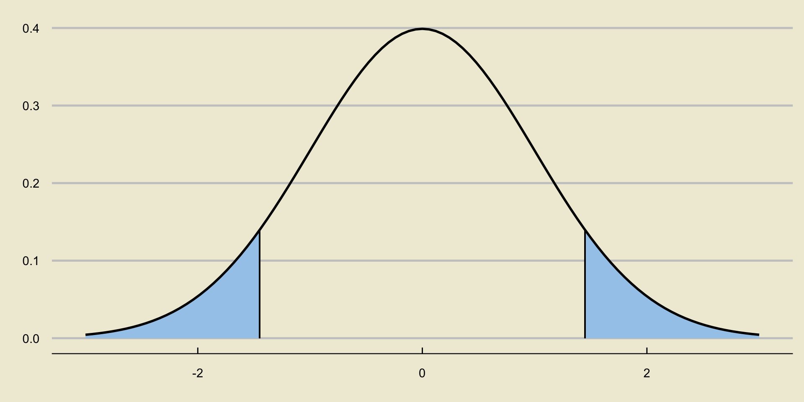
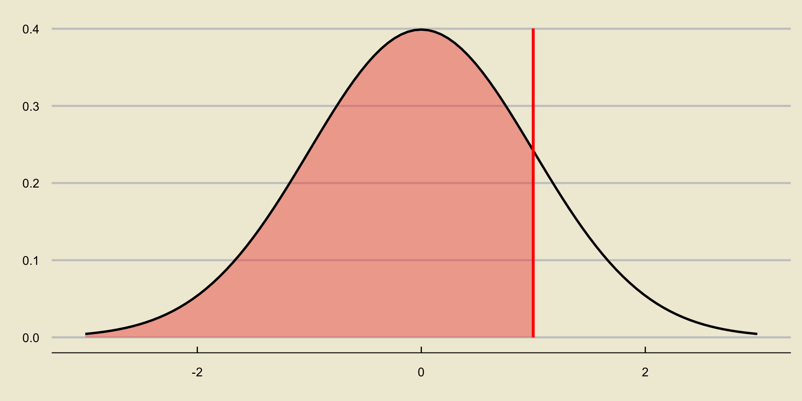
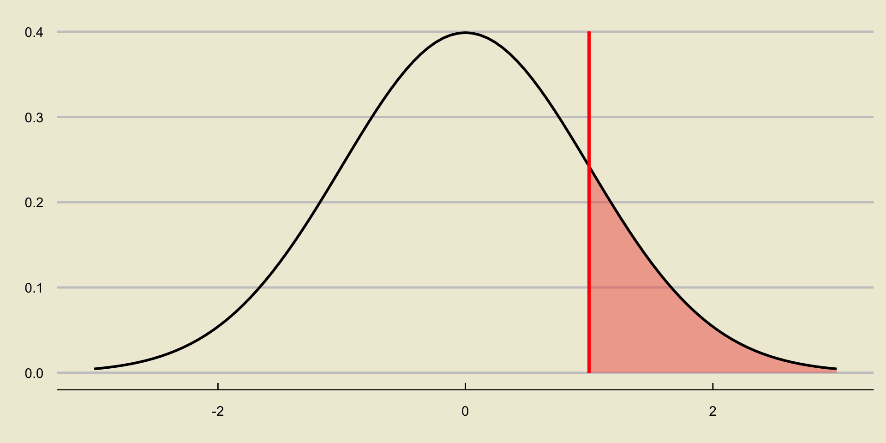
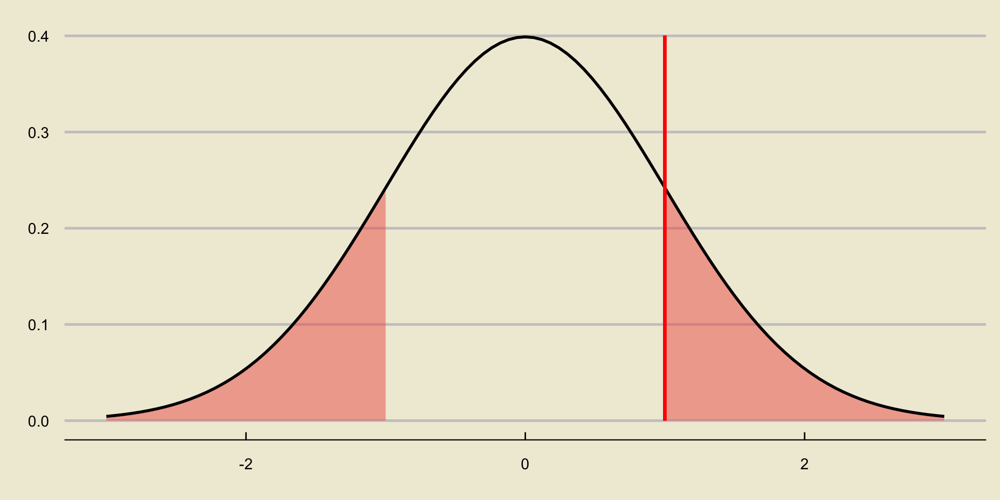
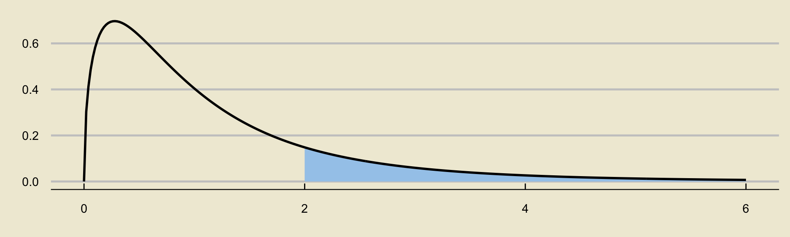
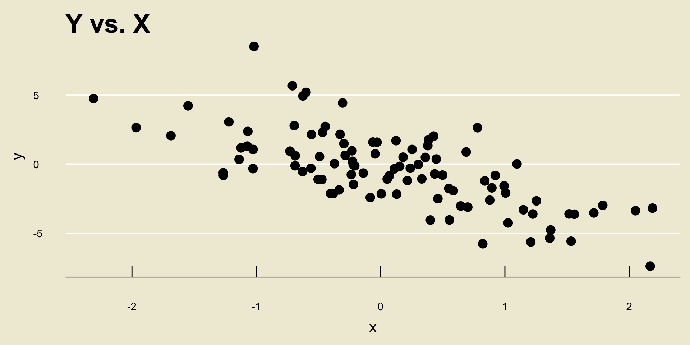
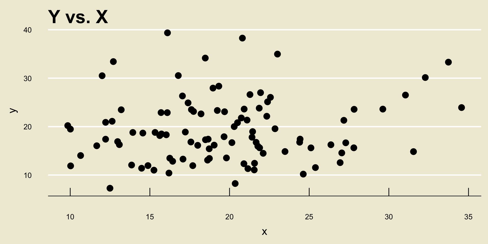
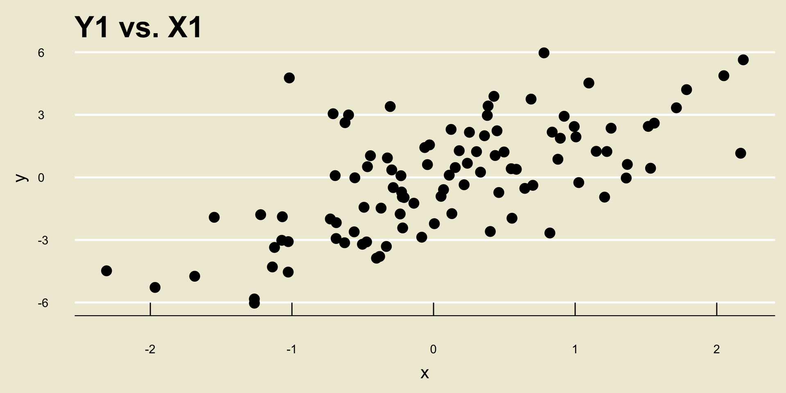
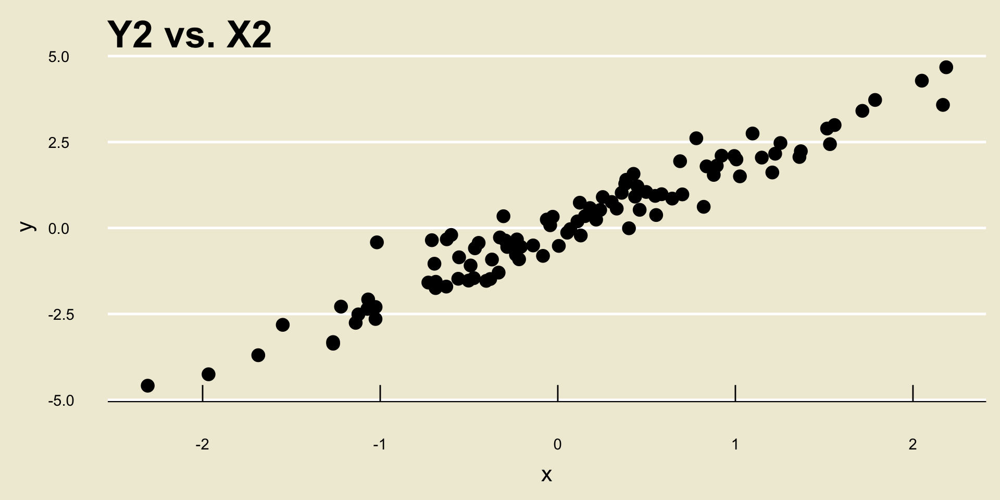

graph TB
A[Is the population Normal? . ] --> |Yes| B{{Use Normal .}}
A --> |No| C[Is n >= 30? .]
C --> |Yes| D[sigma or s? .]
C --> |No| E{{cannot proceed .}}
D --> |sigma| F{{Use Normal .}}
D --> |s| G{{Use t }}
PSTAT 5A: Final Exam Review
Post-MT2 Review
Ethan P. Marzban
2023-08-03
Recap of Hypothesis Testing
Setup
Consider a population, governed by some parameter \(\theta\) (e.g. a mean \(\mu\), a variance \(\sigma^2\), a proportion \(p\), etc.)
Suppose we have a null hypothesis that \(\theta = \theta_0\) (for some specified and fixed value \(\theta_0\)), along with an alternative hypothesis.
The goal of hypothesis testing is to use data (in the form of a representative sample taken from the population), and determine whether or not this data leads credence to the null in favor of the alternative.
- Recall that there are four main types of alternatives we could adopt: two-sided, lower-tailed, upper-tailed, and simple-vs-simple.
Testing a Mean
Before MT2, we discussed the framework of hypothesis testing a population proportion p.
After MT2, we discussed how to perform hypothesis testing on a population mean \(\mu\).
Let’s, for the moment, consider a two-sided test: \[ \left[ \begin{array}{rr} H_0: & \mu = \mu_0 \\ H_A: & \mu \neq \mu_0 \end{array} \right. \]
Since we know that \(\overline{X}\), the sample mean, is a relatively good point estimator of a population mean \(\mu\), we know that our test statistic should involve \(\overline{X}\) in some way.
Testing a Mean
- Specifically, we know that our test statistics are usually standardized versions of point estimators. As such, it is tempting to adopt \[ \mathrm{TS} = \frac{\overline{X} - \mu_0}{\sigma / \sqrt{n}} \] as, under certain conditions, this follows a standard normal distribution under the null (i.e. when assuming the true population mean \(\mu\) is in fact \(\mu_0\)): \[ \mathrm{TS} = \frac{\overline{X} - \mu_0}{\sigma / \sqrt{n}} \stackrel{H_0}{\sim} \mathcal{N}(0, \ 1) \]
Testing a Mean
But, we won’t always have access to the true population standard deviation \(\sigma\)! Rather, sometimes we only have access to \(s_X\), the sample standard deviation.
This leads to the following test statistic: \[ \mathrm{TS} = \frac{\overline{X} - \mu_0}{s_X / \sqrt{n}} \] which now no longer follows the standard normal distribution under the null, but rather a t-distribution with \(n - 1\) degrees of freedom: \[ \mathrm{TS} = \frac{\overline{X} - \mu_0}{s_X / \sqrt{n}} \stackrel{H_0}{\sim} t_{n - 1} \]
Sampling Distribution of \(\overline{X}\)
Test Statistic
- So, to summarize, our test statistic is: \[ \mathrm{TS} = \begin{cases} \displaystyle \frac{\overline{X} - \mu_0}{\sigma / \sqrt{n}} & \text{if } \quad \begin{array}{rl} \bullet & \text{pop. is normal, OR} \\ \bullet & \text{$n \geq 30$ AND $\sigma$ is known} \end{array} \quad \stackrel{H_0}{\sim} \mathcal{N}(0, \ 1) \\[5mm] \displaystyle \frac{\overline{X} - \mu_0}{s / \sqrt{n}} & \text{if } \quad \begin{array}{rl} \bullet & \text{$n \geq 30$ AND $\sigma$ is not known} \end{array} \quad \stackrel{H_0}{\sim} t_{n - 1} \end{cases} \]
Test
Recall our null and alternative hypotheses: \[ \left[ \begin{array}{rr} H_0: & \mu = \mu_0 \\ H_A: & \mu \neq \mu_0 \end{array} \right. \]
If an observed instance of \(\overline{X}\) is much larger than \(\mu_0\), we are more inclined to believe the alternative over the null.
- In other words, we would reject \(H_0\) for large positive values of \(\mathrm{TS}\).
However, we would also be more inclined to believe the alternative over the null if an observed instance of \(\overline{X}\) was much smaller than \(\mu_0\).
- In other words, we would reject \(H_0\) for large negative values of \(\mathrm{TS}\) as well.
Test
We combine these two cases using absolute values: \[ \texttt{decision}(\mathrm{TS}) = \begin{cases} \texttt{reject } H_0 & \text{if } |\mathrm{TS}| > c \\ \texttt{fail to reject } H_0 & \text{otherwise}\\ \end{cases} \] for some critical value \(c\).
The critical value will depend not only on the confidence level, but also the sampling distribution of \(\overline{X}\).
Specifically, as we have previously seen, it will be the appropriate percentile (“appropriate” as dictated by the confidence level) of either the \(\mathcal{N}(0, \ 1)\) distribution or the \(t_{n - 1}\) distribution.
Critical Value
- The critical value is the positive value along the x-axis that makes the blue shaded region equal to \(\alpha\).
p-Values
We also saw how, instead of looking at critical values, we can also look at p-values.
The p-value is the probability of observing something as or more extreme (in the directino of the alternative) than what we currently observe.
As such, p-values that are smaller than the level of significance lead credence to the alternative over the null; i.e. we reject whenever \(p < \alpha\).
- Note this means that the way we compute p-values depends on the type of test (i.e. two-sided, lower-tailed, or upper-tailed) that we are conducting.
p-value; Lower-Tailed Test
p-value; Upper-Tailed Test
p-value; Two-Sided Test
Worked-Out Example
Worked-Out Example 1
A city official claims that the average monthly rent of a 1 bedroom apartment in GauchoVille is $1.1k. To test this claim, a representative sample of 37 1 bedroom apartments is taken; the average monthly rent of these 37 apartments is found to be $1.21k and the standard deviation of these 37 apartments is found to be 0.34. Assume we are conducting a two-sided test with a 5% level of significance.
- Define the parameter of interest.
- State the null and alternative hypotheses.
- Compute the value of the test statistic.
- Assuming the null is correct, what is the distribution of the test statistic?
- What is the critical value of the test?
- Conduct the test, and phrase your conclusions in the context of the problem.
- What code would we use to compute the p-value? Would we expect this value to be less than or greater than 5%?
Solutions
\(\mu =\) average monthly cost of a 1 bedroom apartment in GauchoVille.
\[\left[ \begin{array}{rr} H_0: & \mu = 1.1 \\ H_A: & \mu \neq 1.1 \end{array} \right. \]
Since we do not have access to the population standard deviation, we use \[ \mathrm{TS} = \frac{\overline{X} - \mu_0}{s / \sqrt{n}} = \frac{1.21 - 1.1}{0.34 / \sqrt{37}} = \boxed{ 1.97 } \]
Solutions
- We ask:
- Is the population normally distributed (i.e. are housing prices in GauchoVille normally distributed)? No.
- Is our sample size large enough? Yes; \(n = 37 \geq 30\).
- Do we have \(\sigma\) or \(s\)? We have \(s\).
- Therefore, we use a t-distribution with \(n - 1 = 37 - 1 = 36\) degrees of freedom: \[ \boxed{\mathrm{TS} \stackrel{H_0}{\sim} t_{36} } \]
Solutions
From the t-table provided on the website (which will also be provided to you during the exam), the critical value is \(\boxed{2.03}\).
Since \(|\mathrm{TS}| = |1.97| = 1.97 < 2.03\), we fail to reject the null:
At a 5% level of significance, there was insufficient evidence to reject the null hypothesis that the true monthly cost of a 1-bedroom apartment in GauchoVille is $1.1k in favor of the alternative that the true cost is not $1.1k.
- The code we would use, after importing
scipy.stats, is2 * scipy.stats.t.cdf(-1.97, 36), which we would expect to be larger than 5% as we failed to reject based on the critical value, and we only reject when p is less than \(\alpha\) (which is 5% for this problem).
Two-Sample t-Test
Two Samples
The above discussion was in regards to a single sample, taken from a single population.
What happens if we have two populations, goverend by parameters \(\theta_1\) and \(\theta_2\).
For example, suppose we want to compare the average air pollution in Santa Barbara to that in Los Angeles.
That is, given two populations (Population 1 and Population 2) with population means \(\mu_1\) and \(\mu_2\), we would like to test some claim involving both \(\mu_1\) and \(\mu_2\).
Two Samples
For this class, we only ever consider a null of the form \(H_0: \mu_1 = \mu_2\); i.e. that the two populations have the same average.
We do still have three alternative hypotheses available to us:
- \(H_A: \ \mu_1 \neq \mu_2\)
- \(H_A: \ \mu_1 < \mu_2\)
- \(H_A: \ \mu_1 > \mu_2\)
Remember that the trick is to reparameterize everything to be in terms of a difference of parameters, thereby reducing the two-parameter problem into a one-parameter problem.
Two-Sided
For example, suppose we are testing the following hypotheses: \[ \left[ \begin{array}{rr} H_0: & \mu_1 = \mu_2 \\ H_A: & \mu_1 \neq \mu_2 \end{array} \right. \]
We can define \(\delta = \mu_2 - \mu_1\), and equivalently re-express our hypotheses as \[ \left[ \begin{array}{rr} H_0: & \delta = 0 \\ H_A: & \delta \neq 0 \end{array} \right. \]
Test Statistic
Now, we need some sort of test statistic.
Suppose we have a (representative) sample \(X = \{x_i\}_{i=1}^{n_1}\) from Population 1 and a (representative) sample \(Y = \{y_i\}_{i=1}^{n_2}\) from Population 2 (note the potentially different sample sizes!)
We have an inkling that a decent point estimator for \(\delta = \mu_2 - \mu_1\) is \(\widehat{\delta} = \overline{Y} - \overline{X}\).
Our test statistic will be some standardized form of \(\widehat{\delta}\), meaning we need to find \(\mathbb{E}[\widehat{\delta}]\) and \(\mathrm{SD}(\widehat{\delta})\).
Linear Combinations of Random Variables
Our two main results are:
- \(\mathbb{E}[aX + bY + c] = a \cdot \mathbb{E}[X] + b \cdot \mathbb{E}[Y] + c\)
- \(\mathrm{Var}(aX + bY + c) = a^2 \cdot \mathrm{Var}(X) + b^2 \cdot \mathrm{Var}(Y)\), for independent random variables \(X\) and \(Y\).
Since \(\mathbb{E}[\overline{Y}] = \mu_2\) and \(\mathbb{E}[\overline{X}] = \mu_1\), we have that \[\begin{align*} \mathbb{E}[\widehat{\delta}] & = \mathbb{E}[\overline{Y} - \overline{X}] \\ & = \mathbb{E}[\overline{Y}] - \mathbb{E}[\overline{X}] \\ & = \mu_2 - \mu_1 = \delta \end{align*}\] which effectively shows that \(\widehat{\delta}\) is a “good” point estimator of \(\delta\).
Linear Combinations of Random Variables
- Additionally, since \[ \mathrm{Var}(\overline{X}) = \frac{\sigma_1^2}{n_1}; \qquad \mathrm{Var}(\overline{Y}) = \frac{\sigma_2^2}{n_2} \] we have \[\begin{align*} \mathrm{Var}(\widehat{\delta}) & = \mathrm{Var}(\overline{Y} - \overline{X}) \\ & = \mathrm{Var}(\overline{Y}) + \mathrm{Var}(\overline{X}) \\ & = \frac{\sigma_1^2}{n_1} + \frac{\sigma_2^2}{n_2} \end{align*}\]
Linear Combinations of Random Variables
Also remember how linear combinations of normally-distributed random variables work: if \(X \sim \mathcal{N}(\mu_X, \ \sigma_X)\) and \(Y \sim \mathcal{N}(\mu_Y, \ \sigma_Y)\) with \(X \perp Y\) then \[ (aX + bY + c) \sim \mathcal{N}\left( a \mu_X + b \mu_Y + c, \ \sqrt{a^2 \sigma_X^2 + b^2 \sigma_Y^2} \right) \]
See, for example, Problem 3 from the practice problem set.
Test Statistic
This led us to consider the following test statistic: \[ \mathrm{TS}_1 = \frac{\overline{Y} - \overline{X}}{\sqrt{\frac{\sigma_1^2}{n_1} + \frac{\sigma_2^2}{n_2}}} \] which, under the null, would follow a standard normal distribution if \(\overline{X}\) and \(\overline{Y}\) both followed a normal distribution.
However, in many situations, we won’t have access to the population variances \(\sigma_1^2\) and \(\sigma_2^2\). Rather, we will only have access to the sample variances \(s_X^2\) and \(s_Y^2\). Hence, we modify our test statistic to be of the form \[ \mathrm{TS} = \frac{\overline{Y} - \overline{X}}{\sqrt{\frac{s_X^2}{n_1} + \frac{s_Y^2}{n_2}}} \]
Distribution of the Test Statistic
This statistic is no longer normally distributed under the null.
It approximately follows a t distribution with degrees of freedom given by the Satterthwaite Approximation: \[ \mathrm{df} = \mathrm{round}\left\{ \frac{ \left[ \left( \frac{s_X^2}{n_1} \right) + \left( \frac{s_Y^2}{n_2} \right) \right]^2 }{ \frac{\left( \frac{s_X^2}{n_1} \right)^2}{n_1 - 1} + \frac{\left( \frac{s_Y^2}{n_2} \right)^2}{n_2 - 1} } \right\} \]
That is; \[ \mathrm{TS} \stackrel{H_0}{\sim} t_{\mathrm{df}}; \quad \text{df given by above}\]
Test
If we are conducting a two-sided hypothesis test, then both large positive values and large negative values of our test statistic would lead credence to the null over the alternative.
- As such, our test would reject for large values of \(|\mathrm{TS}|\)
If instead our alternative took the form \(\mu_1 < \mu_2\); i.e. that \(\delta = \mu_2 - \mu_1 > 0\), our test would reject for large positive values of \(\mathrm{TS}\).
If instead our alternative took the form \(\mu_1 > \mu_2\); i.e. that \(\delta = \mu_2 - \mu_1 < 0\), our test would reject for large negative values of \(\mathrm{TS}\).
Again, the key is to note that after reparameterizing the problem to be in terms of the difference \(\delta = \mu_2 - \mu_1\), the problem becomes a familiar one-parameter problem.
Worked-Out Example
Worked-Out Example 2
A renter wants to know which city is cheaper to live in: GauchoVille or Bruin City. Specifically, she would like to test the null hypothesis that the two cities have the same average monthly rent against the alternative that GauchoVille has a higher average monthly rent.
As such, she takes a representative sample of 32 houses from GauchoVille (which she calls Population 1) and 32 houses from Bruin City (which she calls Population 2), and records the following information about her samples (all values are reported in thousands of dollars):
\[\begin{array}{r|cc} & \text{Sample Average} & \text{Sample Standard Deviation} \\ \hline \textbf{GauchoVille} & 3.2 & 0.50 \\ \textbf{Bruin City} & 3.5 & 0.60 \end{array}\]
- Write down the null and alternative hypotheses, taking care to define any relevant parameter(s).
- Compute the value of the test statistic.
- Assuming the null is correct, what is the distribution of the test statistic? Be sure to include any/all relevant parameter(s)! (Assume all independence and normality conditions are met.)
- What is the critical value of the test, if we are to use a 5% level of significance?
- Conduct the relevant test at a 5% level of significance, and report your conclusions in the context of the problem.
Solutions
- Let \(\mu_1\) denote the true average monthly rent in Population 1 (GauchoVille) and let \(\mu_2\) denote the true average monthly rent in Population 2 (Bruin City). Then, the null and alternative hypotheses can be phrased as: \[ \left[ \begin{array}{rr} H_0: & \mu_1 = \mu_2 \\ H_A: & \mu_1 < \mu_2 \end{array} \right. \] which, phrased in terms of the difference \(\mu_2 - \mu_1\), is equivalent to \[ \left[ \begin{array}{rr} H_0: & \mu_2 - \mu_1 = 0 \\ H_A: & \mu_2 - \mu_1 > 0 \end{array} \right. \]
Solutions
- We compute
\[\begin{align*} \mathrm{TS} & = \frac{\overline{Y} - \overline{X}}{\sqrt{\frac{s_X^2}{n_1} + \frac{s_Y^2}{n_2}}} \\ & = \frac{3.5 - 3.2}{\sqrt{\frac{0.5^2}{32} + \frac{0.6^2}{32} }} \approx \boxed{2.173} \end{align*}\]
Solutions
- We know that, under the null, the test statistic (assuming all independence and normality conditions hold) follows a t-distribution with degrees of freedom given by the Satterthwaite Approximation. As such, we should first compute the degrees of freedom:
\[\begin{align*} \mathrm{df} & = \mathrm{round}\left\{ \frac{ \left[ \left( \frac{s_X^2}{n_1} \right) + \left( \frac{s_Y^2}{n_2} \right) \right]^2 }{ \frac{\left( \frac{s_X^2}{n_1} \right)^2}{n_1 - 1} + \frac{\left( \frac{s_Y^2}{n_2} \right)^2}{n_2 - 1} } \right\} \\ & = \mathrm{round}\left\{ \frac{ \left[ \left( \frac{0.5^2}{32} \right) + \left( \frac{0.6^2}{32} \right) \right]^2 }{ \frac{\left( \frac{0.5^2}{32} \right)^2}{32 - 1} + \frac{\left( \frac{0.6^2}{32} \right)^2}{32 - 1} } \right\} \\ & = \mathrm{round}\{60.04737\} = 60 \end{align*}\]
- Therefore, \(\mathrm{TS} \stackrel{H_0}{\sim} t_{60}\)
Solutions
Recall that we have an upper-tailed alternative. As such, the critical value will be the \((1 - 0.05) \times 100 = 95\)th percentile of the \(t_{60}\) distribution. From our table, we see that this is \(\boxed{1.67}\).
We reject when our test statistic is larger than the critical value (again, since we are using an upper-tailed alternative). Since \(\mathrm{TS} = 2.173 > 1.67\), we reject the null:
At a 5% level of significance, there was sufficient evidence to reject the null that the average monthly rent in the two cities is the same against the alternative that the average monthly rent in Bruin City is higher than that in GauchoVille.
- Quick aside: do you think it was a valid assumption to make that the “normality conditions” hold?
Analysis of Variance
Multiple Populations
Suppose, instead of comparing two population means, we compare k population means \(\mu_1, \cdots, \mu_k\).
This is one framework in which ANOVA (Analysis of Variance) is useful.
Given \(k\) populations, each assumed to be normally distributed, with means \(\mu_1, \cdots, \mu_k\), ANOVA tests the following hypotheses: \[ \left[ \begin{array}{rl} H_0: & \mu_1 = \mu_2 = \cdots = \mu_k \\ H_A: & \text{at least one of the $\mu_i$'s is different from the others} \end{array} \right. \]
ANOVA
Specifically, ANOVA utilizes the so-called F-statistic \[ \mathrm{F} = \frac{\mathrm{MS}_{\mathrm{G}}}{\mathrm{MS}_{E}} \] where \(\mathrm{MS}_{\mathrm{G}}\), the mean square between groups, can be thought of as a measure of variability between group means, and \(\mathrm{MS}_{\mathrm{E}}\), the mean squared error, can be thought of as a measure of variability within groups/variability due to chance.
If \(\mathrm{MS}_{\mathrm{G}}\) is much larger than \(\mathrm{MS}_{\mathrm{E}}\) - i.e. if the variability between groups is much more than what we would expect due to chance alone - we would likely reject the null that all group means were the same.
- As such, ANOVA rejects for values of the F-statistic that are large (i.e. much greater than 1).
ANOVA
Assuming the \(k\) populations follow independent normal distributions, the F-statistic follows an F-distribution under the null.
- Specifically, \(F \sim F_{k-1, \ n - k}\) where \(n\) is the total number of observations across all groups.
Since we reject \(H_0\) (in favor of \(H_A\)) whenever \(F\) is large, we always compute p-values in ANOVA using right-tail probabilities:

ANOVA
- The results of an ANOVA are typically displayed by way of an ANOVA Table:
| DF | Sum Sq | Mean Sq | F value | Pr(>F) | |
|---|---|---|---|---|---|
| Between Groups | \(k - 1\) | \(\mathrm{SS}_{\mathrm{G}}\) | \(\mathrm{MS}_{\mathrm{G}}\) | F | p-value |
| Residuals | \(n - k\) | \(\mathrm{SS}_{\mathrm{E}}\) | \(\mathrm{MS}_{\mathrm{E}}\) |
- You should familiarize yourself with how these quantities relate to each other; specifically, that \[ \mathrm{MS}_{\mathrm{G}} = \frac{\mathrm{SS}_{\mathrm{G}}}{k - 1} ; \quad \mathrm{MS}_{\mathrm{E}} = \frac{\mathrm{SS}_{\mathrm{E}}}{n - k}; \quad F = \frac{\mathrm{MS}_{\mathrm{G}}}{\mathrm{MS}_{\mathrm{E}}} \]
Correlation and Regression
Associations and Correlations
Recall, from Week 1, that a scatterplot is a good way to visualize the relationship between two numerical variables
xandy.Two variables can have either a positive or a negative relationship/association, along with a linear or nonlinear one.
- “Positive” means a one-unit increase in
xtranslates to an increase iny - “Negative” means a one-unit increase in
xtranslates to an degrease iny - “Linear” means the rate of change is fixed (i.e. constant)
- “Nonlinear” means the rate of change depends on
x
- “Positive” means a one-unit increase in
- Linear Negative Association:

- Nonlinear Negative Association:

- Linear Positive Association:
- Nonlinear Positive Association:

No Relationship
- Sometimes, two variables will have no relationship at all:

Strength of a Relationship


Pearson’s r
Pearson’s r (or just the correlation coefficient) is a metric used to quantify the strength and direction of a linear relationship between two variables.
Given variables
xandy(whose elements are denoted using the familiar notation we’ve been using throughout this course), we compute r using \[ r = \frac{1}{n - 1} \sum_{i=1}^{n} \left( \frac{x_i - \overline{x}}{s_X} \right) \left( \frac{y_i - \overline{y}}{s_Y} \right) \]Recall that \(-1 \leq r \leq 1\) for any two variables
xandy.- Furthermore,
rwill only ever be \(-1\) or \(1\) exactly when the points in the scatterplot fall perfectly on a line.
- Furthermore,
Statistical Modeling
We may also want to model the relationship between
xandy.Specifically, given a response variable
yand an explanatory variablex, a statistical model asserts thatxandyare related according to \[ \texttt{y} = f(\texttt{x}) + \texttt{noise} \] where \(f()\) is called the signal function- By the way: on a scatterplot, the response variable will always appear on the vertical axis and the explanatory variable will appear on the horizontal axis.
If the response variable is numerical, we call the model a regression model. If the response variable is categorical, we call the model a classification model.
Simple Linear Regression
- Simple Lineaer Regression refers to a situation in which:
- We have a numerical response
y - We have a single explanatory variable
x - We assume a linear form for the signal function; i.e. \(f(x) = \beta_0 + \beta_1 x\)
- We have a numerical response
- This leads to the model \[ \texttt{y} = \beta_0 + \beta_1 \cdot \texttt{x} + \texttt{noise} \]
Simple Linear Regression
Now, the noise part of our model makes it impossible to know the true values of \(\beta_0\) and \(\beta_1\).
- In this way, we can think of them as population parameters.
As such, we seek to find point estimators \(\widehat{\beta_0}\) and \(\widehat{\beta_1}\) that best estimate \(\beta_0\) and \(\beta_1\), respectively.
To quantify what we mean by “best”, we employed the condition of minimizing the residual sum of squares.
- Effectively, this means finding the line \(\widehat{\beta_0} + \widehat{\beta_1} \cdot \texttt{x}\) that minimizes the average distance between the points in the dataset and the line.
Regression

Regression
Such estimators (i.e. those that minimize the RSS) are said to be ordinary least squares (OLS) estimates.
- The resulting line \(\widehat{\beta_0} + \widehat{\beta_1} \cdot \texttt{x}\) is thus called the OLS Regression Line
It turns out that the OLS estimates of \(\beta_0\) and \(\beta_1\) are: \[\begin{align*} \widehat{\beta_1} & = \frac{\sum_{i=1}^{n} (x_i - \overline{x})(y_i - \overline{y})}{\sum_{i=1}^{n} (x - \overline{x})^2} = \frac{s_Y}{s_X} \cdot r \\ \widehat{\beta_0} & = \overline{y} - \widehat{\beta_1} \cdot \overline{x} \end{align*}\] where r denotes Pearson’s Correlation Coefficient \[ r = \frac{1}{n - 1} \sum_{i=1}^{n} \left( \frac{x_i - \overline{x}}{s_X} \right) \left( \frac{y_i - \overline{y}}{s_Y} \right) \]
Regression
- The values along the OLS regression line corresponding to
xvalues observed in the dataset are called fitted values:

- In a sense, the fitted values represent guess/estimate of the de-noised value of
y
Regression
- We can use the OLS regression line to perform prediction; i.e. to infer response values associated with explanatory values that were not included in the original dataset.
Example
Exercise 1
An airline is interested in determining the relationship between flight duration (in minutes) and the net amount of soda consumed (in oz.). Letting x denote flight duration (the explanatory variable) and y denote amount of soda consumed (the response variable), a sample yielded the following results: \[ \begin{array}{cc}
\displaystyle \sum_{i=1}^{102} x_i = 20,\!190.55; & \displaystyle \sum_{i=1}^{102} (x_i - \overline{x})^2 = 101,\!865 \\
\displaystyle \sum_{i=1}^{102} y_i = 166,\!907.8 & \displaystyle \sum_{i=1}^{102} (y_i - \overline{y})^2 = 120,\!794.2 \\
\displaystyle \sum_{i=1}^{102} (x_i - \overline{x})(y_i - \overline{y}) = 80,\!184.62 \\
\end{array} \]
- Find the equation of the OLS Regression line.
- If a particular flight has a duration of 130 minutes, how many ounces of soda would we expect to be consumed on the flight? (Suppose the \(x-\)observations ranged from around \(114\) to around \(271\))
Solutions
- \[\begin{align*} \widehat{\beta_1} & = \frac{\sum_{i=1}^{n}(x_i - \overline{x})(y_i - \overline{y})} {\sum_{i=1}^{n} (x_i - \overline{x})^2} = \frac{80,\!184.62}{101,\!865} \approx \boxed{0.7872} \\ \widehat{\beta_0} & = \overline{y} - \widehat{\beta_1} \cdot \overline{x} = \boxed{1510.138} \end{align*}\] Therefore, \[ \widehat{(\texttt{amt. of soda})} = 1510.138 + (0.7872) \cdot (\texttt{flight duration}) \]
- \(\widehat{y}^{(130)} = 1510.138 + (0.7872) \cdot (130) = \boxed{1612.474 \text{ oz.}}\)
Extrapolation
Remember that it is dangerous to try and use the OLS regression line to predict response values for explanatory variables that are far outside of the scope of the original data.
For example, since the dataset in the previous example only included flights between 114 minutes and 271 minutes, it would be dangerous to try to predict the amount of soda that would be consumed on a 13-hr flight (780 mins) using the OLS regression line, as we cannot be certain that the relationship between
amt. of sodaandflight durationremains linear for larger values offlight duration.Recall that this relates to extrapolation.
Inference on the Slope
We also talked about how we can perform inference on the slope \(\beta_1\) of the OLS regression line.
Specifically, we may want to test \[ \left[ \begin{array}{rl} H_0: & \beta_1 = 0 \\ H_A: & \beta_1 \neq 0 \end{array} \right. \]
- The reason we want to test this is that, if we have reason to believe that \(\beta_1\) could be zero, then there might not be a linear relationship between
yandxat all!
- The reason we want to test this is that, if we have reason to believe that \(\beta_1\) could be zero, then there might not be a linear relationship between
Under normality conditions, \[ \frac{\widehat{\beta_1} - \beta_1}{\mathrm{SD}(\widehat{\beta_1})} \stackrel{H_0}{\sim} t_{n - 2} \]
Example
Worked-Out Example 4
The results of regressing a variable y onto another variable x are shown below:
| Estimate | Std. Error | t-value | Pr(>|t|) | |
|---|---|---|---|---|
| Intercept | -0.05185 | 0.24779 | -0.209 | 0.836 |
| Slope | 0.08783 | 0.07869 | 1.116 | 0.272 |
Is it possible that there exists no linear relationship between y and x? (Use a 5% level of significance wherever necessary.) Explain.
- Since the p-value of testing \(H_0: \beta_1 = 0\) vs \(H_A: \beta_1 \neq 0\) is \(0.272\), which is greater than a significance level of 5%, we would fail to reject the null; that is, it is possible that there exists no linear relationship between
yandx.
Sampling, and the Structure of Studies
Sampling Procedures
Finally, last lecture, we returned to the basics- data!
Specifically, we discussed different ways data can be collected; i.e. the different sampling procedures that are available to us.
In a simple random sample, every individual in the population has an equal chance of being included in the sample.
- This can sometimes be costly, or even lead to biased samples.
In a stratified sampling scheme, the population is first divided into several strata (groups), and an SRS is taken from each stratum.
- This has the benefit of creating a potentially more representative sample, though can still be quite costly. Results are also heavily dependent on the strata that were created.
A cluster sampling scheme again divides the population into groups (now called clusters), takes an SRS of clusters, and then takes an SRS from the selected clusters.
- This has the benefit of being (potentially) cheaper, but can again lead to biased samples and is also heavily dependent on the clusters that were created.
Sampling Procedures
A convenience sample is one in which individuals are included (or excluded) from the sample based on convenience; e.g. people who are nearby (geographically) are included whereas people who are farther away are not.
- Convenience Samples are cheap and, well, convenient, but can lead to very skewed or biased results.
Speaking of bias, there was another form of bias we discussed: non-response bias.
- This occurs when certain individuals (or potentially even demographics, genders, etc.) do not participate in a survey, despite having been included in the sample of surveyed individuals.
Other Distinctions
In an observational study, treatment is neither administered nor withheld from subjects.
In an experiment, treatment is administered (or possibly withheld) from subjects.
In a longitudinal study, subjects are tracked over a period of time. (Observations are therefore correlated)
In a cross-sectional study, there is no tracking of subjects over time.
Example
Example (1.20 from OpenIntro)
On a large college campus first-year students and sophomores live in dorms located on the eastern part of the campus and juniors and seniors live in dorms located on the western part of the campus. Suppose you want to collect student opinions on a new housing structure the college administration is proposing and you want to make sure your survey equally represents opinions from students from all years.
- What type of study is this?
- Suggest a sampling strategy for carrying out this study.
Solutions
- Treatment has neither been administered nor withheld, meaning this is an observational study.
Stratified sampling seems like the way to go, with
western campusandeastern campusbeing the two strata.- Specifically, we should take an SRS from both
western campusandeastern campusstudents, to ensure that students across all years are (somewhat) equally represented.
- Specifically, we should take an SRS from both